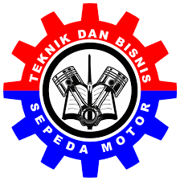

KOMPETENSI KEAHLIAN
Berikut ini adalah uraian singkat Jurusan di SMK SMK YASBAM
Teknik Komputer dan Jaringan
TKJ merupakan sebuah kejuruan yang mempelajari tentang cara merakit komputer, mengenal dan mempelajari komponen hardware apa saja yang ada di dalam komputer, merakit komputer serta fokus mempelajari jaringan dasar.

Teknik Bisnis Sepedah Motor
salah satu cabang ilmu teknik mesin yang mempelajari tentang bagaimana merancang, membuat dan mengembangkan alat-alat transportasi darat yang menggunakan mesin, terutama sepeda motor.
STRUKTUR ORGANISASI
Struktur organisasi di SMK YASBAM
Nama Kepala Sekolah
Hj. Deden Iskandar S,Pd.M,Pd
menjabat kepala sekolah
Nama Waka
Hj. Lilis Solihat S,Pd.M,Pd
Menjabat wakil kepala sekolah kurikulum
Nama Waka
Usman S.kom
menjabat wakil kepala sekolah kesiswaan
Nama Waka
Yudi Haerudin S.IP
menjabat wakil kepala sekolah humas
Nama Waka
Yadi Mulyadi M.Pd
menjabat wakil kepala sekolah sarana prasarana
SMK YASBAM KOTA BOGOR
SUBSCRIBEBERITA TERBARU
Menyajikan informasi di SMK YASBAM

BERITA TERBARU
Siap-siap! SPP SMA dan SMK di Jatim Bakal Naik, Segini Biaya yang Mungkin Harus Dibayar Ortu
SURYAMALANG.COM, SURABAYA – Para wali murid jenjang SMA dan SMK harus siap mengeluarkan anggaran lebih besar untuk biaya pendidikan anak-anaknya. Sebab, Dinas Pendidikan (Dindik) Jawa Timur (Jatim) berencana menaikkan besaran SPP mulai tahun ajaran baru pada Juli 2018. Kepala Dindik Jatim, Saiful Rachman
READ MORE...
BERITA TERBARU
SPP SMK Negeri dan Swasta di Jawa Timur (Contoh Postingan)
Surabaya – Kebijakan SPP gratis di Jawa Timur tidak hanya untuk SMA dan SMK Negeri. Kebijakan yang akan dimulai bulan Juli ini juga berlaku untuk sekolah swasta. Namun, ada regulasi yang berbeda. Kepala Dinas Pendidikan Jatim Saiful Rachman mengatakan kebijakan
READ MORE...
BERITA TERBARU
Pengumuman SBMPTN Bagi siswa (Contoh Postingan)
Menjelang tahun ajaran baru, berbagai kesibukan mulai tampak terjadi. Kesibukan karena mempersiapkan berbagai kebutuhan untuk memasuki sekolah baru, ujian naik kelas, ujian nasional bahkan persiapan tes masuk perguruan tinggi idaman. Hari-hari ini pihak sekolah terutama
READ MORE...Pusat Informasi
KANTOR SMK Negeri 1
Jl. Mana Saja, Indonesia
Kontak kami
Jumat , 07.00 WIB - 16.00 WIB SMKN 1